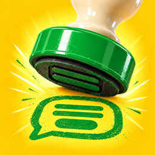

Frequently asked questions about Quickly, the AI copy-paste keyboard for iPhone and iPad.
On your iPhone or iPad, go to Settings › General › Keyboard › Keyboards › Add New Keyboard › Quickly. Then, whenever you're typing in any app, tap the globe key to switch to Quickly — or touch and hold it to pick from the list. Open the Quickly app once and create a template so the keyboard has something to show.
No. Inserting templates and typing work fully without it. Turning it on only adds vibration (haptics) when you tap keys, because iOS blocks vibration for keyboards without Full Access. Even with it on, the Quickly keyboard never connects to the internet.
That's expected. In secure fields (passwords) and phone number fields, iOS automatically switches to the system keyboard. In other fields you can switch back to Quickly with the globe key.
Eleven: English, Korean, Japanese, Chinese (Simplified and Traditional), German, Spanish, French, Italian, Portuguese and Russian. Choose them in the app under Settings › Keyboard Languages.
A template is a message you send often, set up once. Variables are the spots in it that change each time — a name, a date, an amount. Add them with Insert Variable while editing a template. When you send, Quickly asks only for the variables, one at a time, and shows the finished message as you go.
Text (a name or address), Date (tomorrow, the day after, or this Saturday in one tap, without opening a calendar), Amount (just tap the digits; the currency symbol and separators are added for you), Number, Formula (calculated from other numbers, like “Hours × 50”), List (tap one of your usual choices) and Same Value (enter it once and every spot that uses it is filled in). Make a value that never changes a Fixed Value and Quickly stops asking for it.
If you filled it in on the keyboard, it goes straight into the field you're typing in. If you filled it in in the app, copy it and paste it wherever you like.
Every message you make by filling in a template is kept in Finished Texts. Copy it again or insert it again from the keyboard. Set how long they're kept and how many per template in Settings.
Use tags to separate things like work and personal, and search by title or content.
Describe the situation in one line (for example, “a reminder the day before a salon appointment”) and it writes the message with the changing parts left as variables. Or paste a message you already send: it finds the parts that change, like names, dates and amounts, and turns them into variables. Tap buttons like Shorter or More polite until it sounds right. And of course you can write your own without AI.
Three options — ① Apple Intelligence: made on your device, for free, on devices that support it ② External AI Prompt: paste a prompt into the ChatGPT, Claude or Gemini app you already use and bring the answer back. No API key needed, and Quickly charges nothing ③ Your own API key: add an API key from OpenAI, Anthropic or Google to get answers right in the app. Usage is billed to your account by that company.
Apple Intelligence is available on devices that support it, running iOS 26 or later. If it's still getting ready or needs to be set up, the app will tell you. In the meantime, External AI Prompt does the same job.
① Tap Copy Prompt ② Paste it into your AI app (ChatGPT, Claude, Gemini or another) and send it ③ Copy the AI's answer ④ Come back to Quickly — the answer is filled in for you. It works with the free or subscription account you already use in that app, and Quickly itself sends nothing.
In Settings, choose ChatGPT, Claude or Gemini and paste an API key from that company (OpenAI, Anthropic or Google). The request you write is sent to that company over the internet and the answer comes straight back into the app. Costs are charged to your account with that company, and its privacy policy applies. Some companies use free-tier requests for training, so check their terms. The key is stored only in this device's Keychain and never moves to your other devices.
Templates, tags and Finished Texts stay the same on your iPhone and iPad signed in to the same iCloud account. Settings stay on each device, except how long Finished Texts are kept and how many are kept per template. API keys don't sync.
Changes can take a moment to arrive, sometimes a few minutes. Keep Quickly open on the receiving device. If it still doesn't appear, check that both devices are signed in to the same iCloud account and that iCloud is turned on for Quickly in the Settings app.
Free up iCloud storage to keep syncing. Everything stays on this device in the meantime.
It deletes all templates, Finished Texts and tags on this device and on your other devices signed in to the same iCloud account. This can't be undone, so we recommend creating a backup file first.
In Settings, tap Create Backup File and save or share the file wherever you like (the Files app, Mail and so on). To restore it, use Import from Backup. A backup file is only created when you make one.
On a Mac with Apple silicon, the Quickly app can run as an iPad app (where it's offered on the Mac App Store). You can create and edit templates and copy filled-in messages, and with the same iCloud account it stays in sync with your iPhone and iPad. The Quickly keyboard, which inserts messages into other apps, is available only on iPhone and iPad.
Yes. Every feature is free, with no ads and no in-app purchases. Only if you use another company's AI with your own API key does that company bill your account for usage.
Only you. Your messages are stored only on this device and in your iCloud, and not even the developer can see them. There's no sign-up or sign-in, and nothing you type is collected. See the Privacy Policy for details.
Found a bug or need help? Send us an email — we read every one.
iOS 18 or later · iPhone and iPad. Writing with Apple Intelligence requires a supported device with iOS 26 or later.